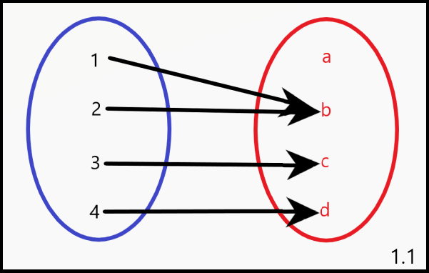

Fie A și B două mulțimi. Se notează cu G produsul lor cartezian: G = A × B.
Fie F o submulțime a lui G.
F este o funcție dacă îndeplinește următoarele două condiții:
● Pentru orice element x din mulțimea A, există un element y în mulțimea B astfel încât perechea (x, y) se află în F.
● Pentru oricare două perechi (x1 , y1) și (x1, y2) din F, y1 = y2.
Funcțiile pot fi definite astfel:
1.Prin tabel : f : { 4, 5, 6 } → { 1, 2 } ; f ( 4 ) = 1, f ( 5 ) = 2, f ( 6 ) = 1
2.Printr-o expresie algebrică: f : R → R ; f ( x ) = 3x - 1

Diagramă (1.1) reprezentând o funcție cu domeniul {1,2,3,4} și codomeniul {a,b,c,d}.
In diagrama dată, putem observa ca doar 3 din cele 4 valori ale codomeniului corespund unui numar. Astfel, imaginea funcției va fi formată doar din cele 3 valori.